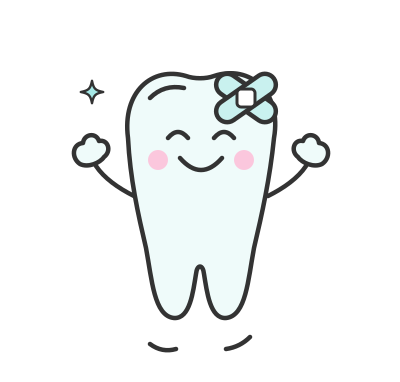

Терапія та лікування
Лікуємо карієс, пульпіт і періодонтит на будь-якій стадії. Працюємо під збільшенням, тому бачимо навіть мікротріщини та приховані канали — це знижує ризик повторного лікування. Пломбуємо фотополімерами, які підбираємо під відтінок вашої емалі, тож реставрація залишається непомітною.
Як проходить прийом
Спершу огляд і прицільний знімок, щоб побачити глибину ураження. Далі анестезія, очищення каналів і герметичне пломбування. Неускладнений карієс лікуємо за один візит, пульпіт — зазвичай за два. Наприкінці полірування та контрольний знімок. Гарантію на роботу фіксуємо письмово.
